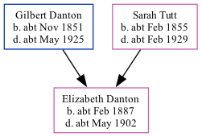

Elizabeth Jane Danton cFeb 1887 - c1902
[ Home ] | [ Calendar ] | [ Surnames Index ] | [ Family History ]The child of Gilbert Danton (a gas stoker) and Sarah Tutt, Elizabeth Danton, the first cousin twice-removed on the father's side of <a href="I1.html">Nigel Horne</a>, was born in Halsham, London, England <i>c.</i> Feb 1887<span class="citation">1,2,3,4</span>.</p><p>Throughout her life, she lived at Ledbury Street, Peckham, London, England in 1891<span class="citation">1</span> and on Apr 5, 1891<span class="citation">6</span>; and in West Ham, Essex, England in 1901<span class="citation">2</span>. <p>She died <i>c.</i> May 1902 in Romford, Essex<span class="citation">5</span>.
Parents
- Gilbert Johnson was born c. Nov 1851
- Sarah Maria was born c. Feb 1855
Citations
- 1891 England Census Online publication - Provo, UT, USA: The Generations Network, Inc., 2005.Original data - Census Returns of England and Wales, 1891. Kew, Surrey, England: The National Archives of the UK (TNA): Public Record Office (PRO), 1891. Data imaged from The National (Relation to Head of House: Daughter)
- 1901 England Census Online publication - Provo, UT, USA: The Generations Network, Inc., 2005.Original data - Census Returns of England and Wales, 1901. Kew, Surrey, England: The National Archives of the UK (TNA): Public Record Office (PRO), 1901. Data imaged from the National (Relation to Head of House: Servant)
- England & Wales births 1837-2006 - Findmypast
- England & Wales, FreeBMD Birth Index, 1837-1915 Online publication - Provo, UT, USA: The Generations Network, Inc., 2006.Original data - General Register Office. England and Wales Civil Registration Indexes. London, England: General Register Office. © Crown copyright. Published by permission of the Cont
- England & Wales deaths 1837-2007 - Findmypast
- 1891 England, Wales & Scotland Census - Findmypast (was age 4 and the daughter of the head of the household)
Media
England & Wales births 1837-2006 - BMD/B/1887/1/AZ/000140/030
England & Wales deaths 1837-2007 - BMD/D/1902/2/AZ/000087/006
Family Tree
Generated by Ged2Site. Last updated on Jul 20, 2025